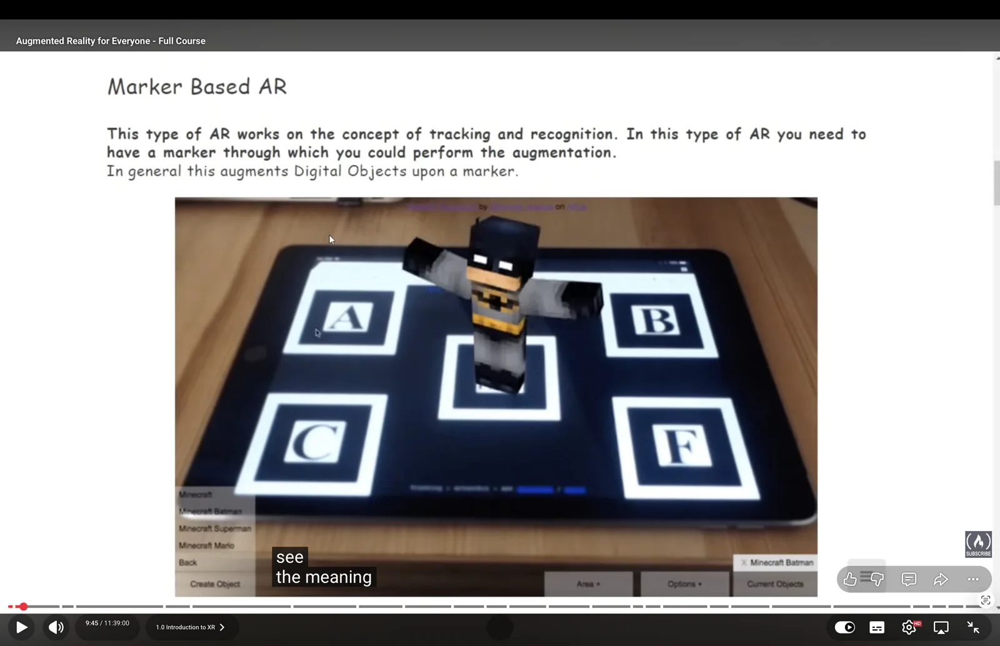
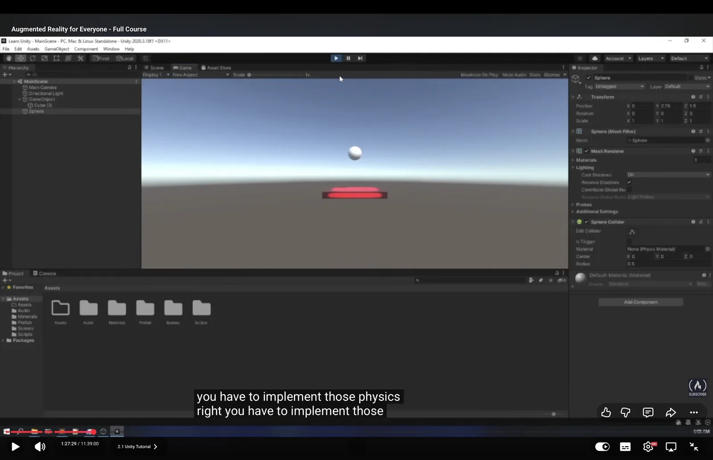
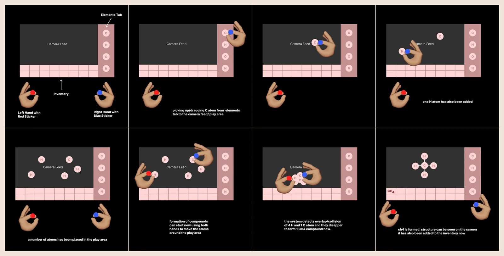
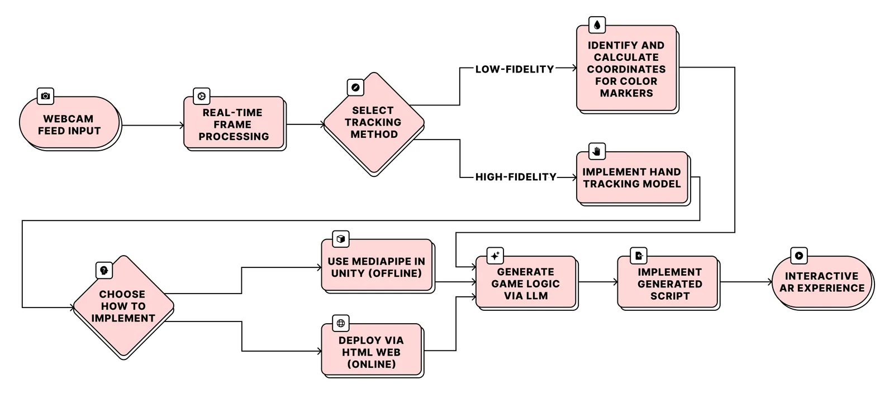
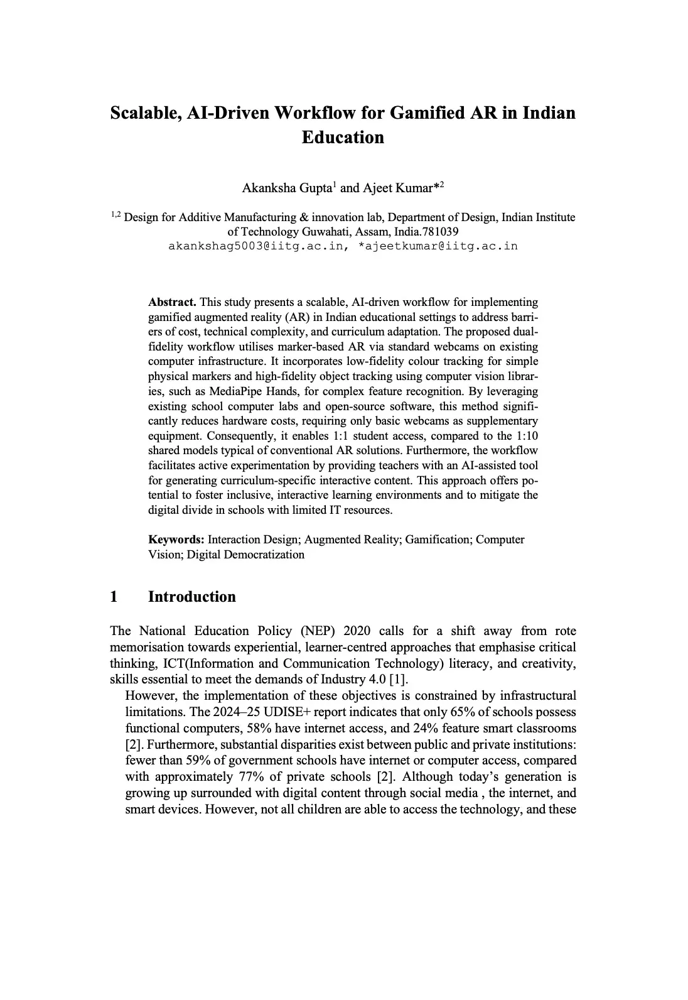
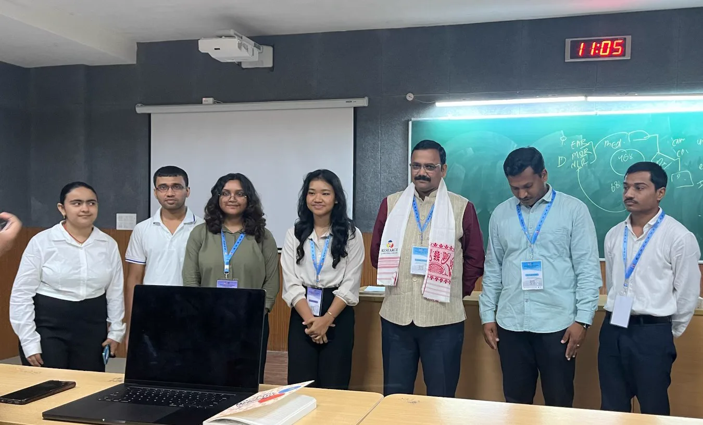
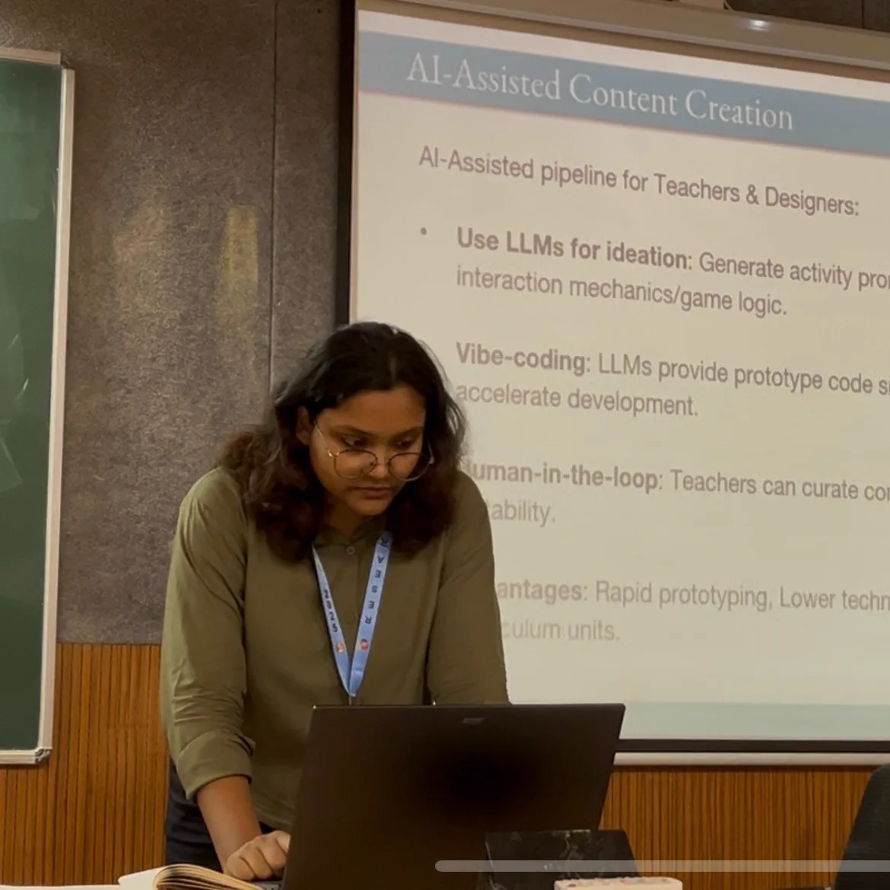

Chem AR
The Brief
Can AI help non-technical educators create interactive learning material? That question shaped every decision in this project, from tooling to deployment.
Context. NEP 2020 recommends adopting interactive learning for Industry 4.0. However, technical barriers prevent many educators from creating this learning material themselves.
Process
Understand
- Explored interaction methods (AR / VR)
- Studied constraints such as school computer infrastructure (Intel i3 machines with no dedicated GPUs)
- Evaluated availability of Head Mounted Displays (HMDs)
Ideate
- Learned Unity
- Implemented color tracking
- Explored object tracking with MediaPipe Hands
- Evaluated deployment methods
Prototype
- Designed interactions for a proof of concept
- Built Chem AR using AI
Synthesis
- Compiled a repeatable workflow
- Documented all findings in a Research Paper
Learning the Tools
Marker-based AR turned out to be the most reliable starting point. I initially followed freeCodeCamp's AR tutorial for Unity and explored different types of AR before landing on physical markers.


In about a week, I created and tested a small Piano Tiles game using color tracking with a Rubik's Cube acting as the physical marker.
Piano Tiles demo — tapping tiles is detected via color tracking on a physical Rubik's Cube marker.
Insights
- Can be deployed completely offline.
- Supports simple tap-based interactions through collision detection.
- Even with AI-generated code, Unity and game engines are generally difficult for non-technical users to learn.
After this, I explored MediaPipe Hands, which enables richer object tracking and more advanced interactions.
The Making of Chem AR
Chem AR is an exploratory virtual lab built around a chemistry topic students commonly struggle with. Learners interact with C, H, and O to create carbon chains, intermediates, cyclic structures, and single, double and triple bonds. I also designed a pinch-and-drag interaction guide for the AI to follow.

The application was deployed on the web using Vercel.
Live in the browser — pinching spawns atoms; dragging two adjacent atoms together forms a bond.
Insights
- Technically easier than Unity.
- Web deployment is quick. Updates do not require reinstalling the application.
- Requires a stable internet connection.
- WebGL cannot fully utilize the device GPU.
Workflow
All findings were compiled into a repeatable, reproducible workflow that enables non-technical educators to build similar learning experiences from start to finish.

Research & Publication
The work was published by Springer Nature after being documented as a research paper and presented at the Research & Industrial Conclave 2025, IIT Guwahati.


